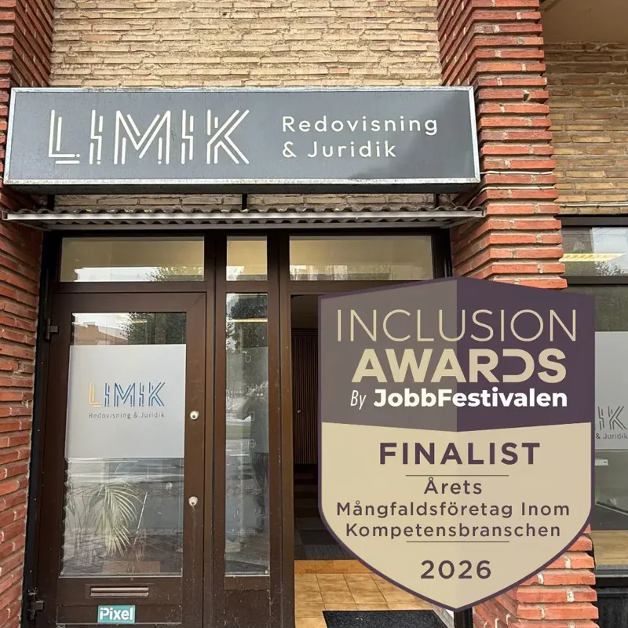

Ekonomi
Bokföring, bokslut, lön och deklaration. Ett löpande stöd för företagets ekonomi, med en personlig kontakt och digitala arbetssätt.
Utforska ekonomiMer tid för det du brinner för. Vi samlar redovisning, juridik och personlig rådgivning under samma tak i Malmö.
Företagets frågor följer sällan en avdelningsgräns. Därför sitter redovisning och juridik tillsammans hos oss. Du får råd som hänger ihop, från vardagens bokföring till nästa stora beslut.
Lär känna människorna bakom LimikEtt starkt nätverk runt ditt företag.
Vi hjälper dig att se hur företagets ekonomi, avtal och framtidsplaner hänger ihop.
Bokföring, bokslut, lön och deklaration. Ett löpande stöd för företagets ekonomi, med en personlig kontakt och digitala arbetssätt.
Utforska ekonomiAffärsjuridik och privatjuridik, från genomtänkta avtal till stöd i en konkret situation. Vi hjälper dig att förstå frågorna och ta nästa steg.
Utforska juridikStöd i affärsutveckling och företagsförvärv. Vi förenar ekonomisk förståelse och juridisk kompetens när verksamheten ska utvecklas.
Utforska affärsrådgivningBästa servicen
Jätte bra service nöjd kund
Hjälpt mig mkt med yrkestrafiktillstånd. Väldigt hjälpsamma
كلش ممتاز الله يبارك بيكم.Utdrag ur de Google-omdömen som visas på Limiks ursprungliga webbplats. Stjärnorna avser respektive omdöme.
Auktoriserad redovisningskonsult
Konsult sedan 2017. Ansvarar för ekonomidelen och kvaliteten i redovisningsuppdraget.
Affärsjurist
Har arbetat inom juridik sedan 2020. Ansvarar för juridiken och frågor som rör bolag, avtal och ägande.
Du berättar om nuläget, behoven och det du vill förändra. Vi går igenom vad ett uppdrag skulle kunna omfatta.
Arbetsfördelning, kontaktvägar och omfattning blir tydliga innan vi börjar.
Du får en personlig kontakt och ett samarbete där ekonomi och juridik kan hållas ihop.

Ett erkännande för arbetet med mångfald och inkludering i företagares vardag.
Läs artikelnFaktorer som påverkar upplägg, omfattning och pris för redovisningstjänster.
Läs artikelnOm avtal och dokument som hjälper till att skapa struktur i företagandet.
Läs artikelnPriset beror på bolagsform, antal verifikationer och vilka delar du vill ha hjälp med. Limik erbjuder upplägg med fast månadspris. Vi går igenom omfattning och villkor innan samarbetet börjar.
Ja, Limik erbjuder en kostnadsfri inledande konsultation för nya företagskunder. Mejla kort om ditt företag och dina behov så kommer vi överens om nästa steg.
Nej. Kontoret finns i Malmö, men Limik arbetar också digitalt med företag i hela Sverige. Vi anpassar kontakten till uppdraget och dina behov.
Ja. Redovisning och juridik finns inom samma verksamhet. Det gör det enklare att samordna frågor som till exempel rör bolagsbildning, avtal och förändringar i ägandet.
Vi börjar med att gå igenom uppdraget och vilka underlag som finns. Därefter planeras överlämningen från din nuvarande byrå, behörigheter och den fortsatta arbetsgången.
Nej. Limik arbetar med redovisning och rådgivning. Om ditt bolag behöver revision ska den utföras av en behörig revisor. Limik kan förbereda underlag och samordna arbetet med revisorn.
Berätta kort om ditt företag och vad du behöver hjälp med.
Första konsultationen för nya företagskunder är kostnadsfri.